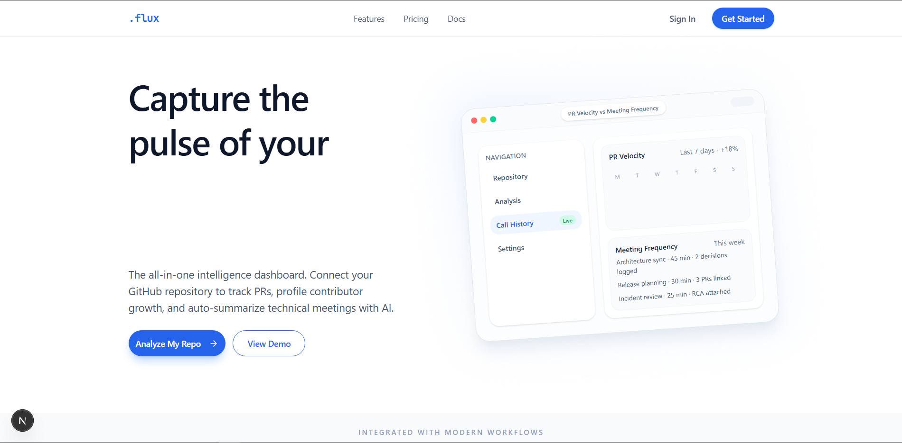

.flux
An AI-first engineering intelligence dashboard that gives your code a voice.

introduction
.flux is an engineering intelligence platform designed to centralize the fragmented context of software development. Created by me and Tisca Catalin during the "AI Thinkerers" Hackathon in Bucharest (organized by ElevenLabs), this project secured 4th place in the local competition.
The platform ingests signals from GitHub repositories, pull requests, and voice meetings into a unified Convex database, allowing AI agents to analyze the "pulse" of an engineering team.
the problem & solution
Engineering context is often scattered across code, chat logs, and call notes. AI agents typically act blindly without access to this historical data.
.flux solves this by creating a "God mode" context layer. It captures:
- Code Metadata: PRs, commits, and file changes via GitHub.
- Human Context: Voice calls and architectural decisions via ElevenLabs.
- Team Dynamics: Contributor roles and seniority inferred from code complexity.
agentic workflow
Unlike simple CI/CD scripts, .flux employs autonomous agents to reason about the data:
- The Analyst (PRAnalyzer): Proactively monitors PRs to assess risk levels (Low to Critical) and impact radius without human intervention.
- The Profiler (ContributorProfiler): Analyzes commit history to infer if a contributor is a "Frontend Junior" or "Backend Lead".
- The Scribe (Meeting Listener): Uses ElevenLabs Scribe v1 to Transcribe engineering calls and extract actionable TODOs linked to specific files.
voice intelligence
The crown jewel of the project is the RepoAssistant Agent. It allows engineers to literally "talk" to their codebase. Using ElevenLabs Multilingual v2 for speech-out and the Vercel AI SDK for orchestration, users can ask questions like "What is the risk level of the last 3 PRs?" or "Who owns the payment infrastructure?" and receive a spoken, context-aware answer.
technical implementation
The project utilizes a modern, real-time stack to support agentic behavior. Here is a snippet showing how we handle text-to-speech generation in the API:
// api/speak/route.ts
const { audio } = await generateSpeech({
model: elevenlabs.speech(modelId),
text,
});
const arrayBuffer = audio.uint8Array.buffer as ArrayBuffer;
const blob = new Blob([arrayBuffer], { type: "audio/mpeg" });
return new Response(blob, {
status: 200,
headers: { "Content-Type": "audio/mpeg" },
});
tech stack
- Frontend: Next.js 16 (App Dir), React 19, Tailwind CSS v4, Shadcn UI.
- Backend & DB: Convex (Real-time database and scheduled functions).
- AI & Agents: Vercel AI SDK, OpenAI, ElevenLabs (STT & TTS).
- Auth & Tools: Clerk Authentication, Octokit (GitHub API).
conclusion
.flux moves beyond static dashboards. By combining deep code analysis with voice intelligence, it creates a living, breathing interface for software engineering teams. It transforms raw metadata into actionable insights, bridging the gap between what the code says and what the team intends.